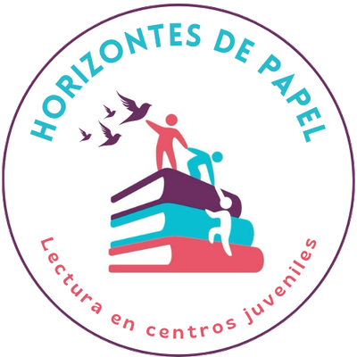

Cada página abre un horizonte
Somos una organización juvenil que lleva la lectura a adolescentes en centros juveniles del Perú, con espacios de diálogo, reflexión y aprendizaje.

Te invitamos a ser parte
Buscamos personas comprometidas con la educación y la inclusión. Como voluntaria o voluntario eliges con qué población quieres colaborar.
Lactario y Programa 4
Madres jóvenes con sus bebés, y adolescentes que ya están cerca de egresar.
Población general
Todas las adolescentes y señoritas que no forman parte de los programas anteriores.
Dona a Horizontes de Papel
Tu aporte financia libros, materiales y actividades para las adolescentes de los centros juveniles.
Cuenta bancaria
- Banco
- [Completar]
- Titular
- [Completar]
- N.° de cuenta
- [Completar]
- CCI
- [Completar]
Yape
- Número
- [Completar]
- A nombre de
- [Completar]
¿Quieres donar libros o apoyar de otra forma? Escríbenos por WhatsApp.